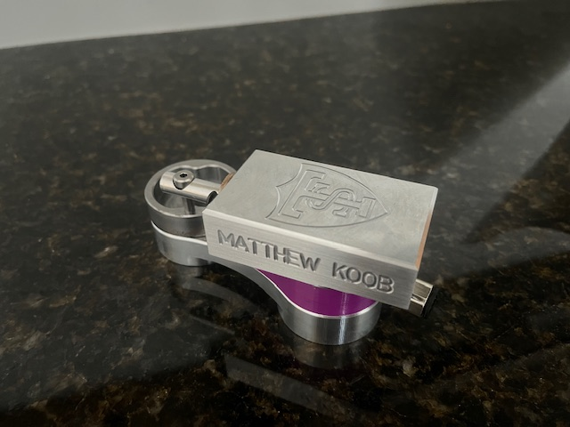
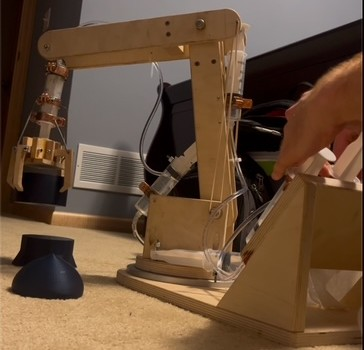

When studying nonlinear and chaotic dynamics, researchers often turn to numerical simulation instead of observing real systems. The double pendulum is a classic chaotic system that is typically studied in this way. Instead of relying solely on simulations, I designed and built an instrumented, driven double pendulum to study the chaos of the living, breathing system.
The pendulum hangs in a frame built to handle violent motion. A stepper motor drives the system using a Scotch Yoke mechanism that converts rotation into the back-and-forth motion of the frame. The pendulum arms can be swapped out and counterweights added to change the balance and moments of inertia of the pendulum. Optical sensors measure the angular positions of the arms, and a data acquisition system (DAQ) collects the data and LabVIEW code displays it in real time. LabVIEW also calls various Python scripts for file handling and additional data analysis. The system is synchronized by a master clock from an oscilloscope that controls both the DAQ and the stepper motor.
The frame is designed like a swing set with four legs that fit into two vertical stands that support the bearings for the top shaft. The swing set frame sits on an aluminum plate. The aluminum plate screws onto an optical table that moves back and forth on the linear slides. The aluminum plate can be removed with the pendulum intact so that other systems can be attached to the shake table.
The stepper motor is belted to the drive shaft which turns the large aluminum flywheel. Originally the Scotch yoke pin was mounted on a simple crank arm, but the large flywheel gave the drive system more rotational inertia to resist violent dynamic loads from the pendulum. The flywheel has ten different mounting locations for the drive pin, allowing us to quickly switch between drive amplitudes.
If the stepper motor stalls or hiccups at all, it can completely change the system’s trajectory. We use a photointerrupter to monitor how consistent the drive is.
We made it easy to switch between different pendulum arms and add counterweights. This allows us to study many different double pendulum configurations without disassembling the entire apparatus.
The angular encoder for the upper arm simply mounts on the frame, but the wiring for the lower arm’s encoder was more difficult because its constant rotations can damage and twist wires. To solve this problem, I mounted slip rings to the top shaft that maintain electrical contact without damaging wires. I then milled out slots in the upper shaft and upper arm to securely hold the wires in place.
These encoders send signals to the counters on the DAQ and then to LabVIEW to be decoded.
LabVIEW is good at working with the DAQs, but Python is better at automatic file handling and data analysis. I decided to use both. LabVIEW receives the data from the DAQs, dejumps the angular data, applies Savitsky-Golay and differentiation filters, wraps the angles, and then displays the Poincare sections being built up in real time. LabVIEW calls Python to ask the user for important information about the experiment and automatically create, name, and store all necessary files appropriately. After the experiment is finished, Python analyzes the drive error readings from the photointerrupter to search for stalls. My scripts also allow the user to analyze how the Poincare sections built up over any interval in the experiment. If you want to see the Poincare sections or error from a previous experimental run, you simply give my script the run’s binary data file path and it will recreate the Poincare sections and drive error graphs.
To synchronize the system, I used a single master clock to time our data acquisition and drive the stepper motor. The stepper motor needs a signal whose frequency is 32 times smaller than the data acquisition frequency, so I made a circuit that divides the master clock frequency by 32.
I was new to machining when I started this project, but in my hundreds of hours working in the shop I have become confident with milling machines, lathes, bandsaws, drill presses, and various other machines like 3D printers and Dremel tools. I have learned a lot about various operations including milling, turning, drilling, center drilling, tapping, parting, counterboring, broaching, reaming, boring, and so on. I have learned quite a bit of practical

Generated CAM toolpaths and machined components for a pneumatic air motor using CNC milling, followed by assembly and functional testing.
Tools: CAM (Fusion 360), CNC milling, manual machining, mechanical assembly
Worked with a small team to design and build a hydraulic robot arm for teaching mechanical advantage, fluid power, and linkage-driven motion to grade-school students.

Tools: Mechanical design, prototyping, manual fabrication, basic fluid mechanics
I’m grateful to my teachers and mentors who supported these projects—especially those who provided technical guidance, shop access, and feedback throughout the build process.
Their mentorship and kindness have been essential in my growth as an engineer.
Email:
koob3090@stthomas.edu
LinkedIn:
linkedin.com/in/mjkoob